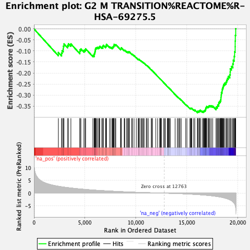

| | | Dataset | expr_RNAseq_ranks |
| Phenotype | NoPhenotypeAvailable |
| Upregulated in class | na_neg |
| GeneSet | G2 M TRANSITION%REACTOME%R-HSA-69275.5 |
| Enrichment Score (ES) | -0.3805837 |
| Normalized Enrichment Score (NES) | NaN |
| Nominal p-value | NaN |
| FDR q-value | 1.0 |
| FWER p-Value | 0.0 |
Table: GSEA Results Summary

Fig 1: Enrichment plot: G2 M TRANSITION%REACTOME%R-HSA-69275.5
Profile of the Running ES Score & Positions of GeneSet Members on the Rank Ordered List
| PROBE | GENE SYMBOL | GENE_TITLE | RANK IN GENE LIST | RANK METRIC SCORE | RUNNING ES | CORE ENRICHMENT | | 1 | ODF2 | | | 2389 | 2.707 | -0.1068 | No |
| 2 | NINL | | | 2703 | 2.494 | -0.1090 | No |
| 3 | SFI1 | | | 2756 | 2.463 | -0.0982 | No |
| 4 | CNTRL | | | 2872 | 2.402 | -0.0909 | No |
| 5 | FOXM1 | | | 2880 | 2.398 | -0.0781 | No |
| 6 | HAUS5 | | | 2940 | 2.356 | -0.0681 | No |
| 7 | TUBA1A | | | 3295 | 2.181 | -0.0742 | No |
| 8 | LIN52 | | | 3386 | 2.133 | -0.0671 | No |
| 9 | CEP135 | | | 3621 | 2.019 | -0.0679 | No |
| 10 | NDE1 | | | 4495 | 1.660 | -0.1033 | No |
| 11 | FBXL7 | | | 4510 | 1.654 | -0.0949 | No |
| 12 | PPP2R1A | | | 4606 | 1.614 | -0.0909 | No |
| 13 | PSMC3 | | | 4897 | 1.509 | -0.0974 | No |
| 14 | RBBP4 | | | 5004 | 1.471 | -0.0947 | No |
| 15 | HSP90AB1 | | | 5071 | 1.449 | -0.0901 | No |
| 16 | CDK11A | | | 5779 | 1.233 | -0.1194 | No |
| 17 | CEP152 | | | 5903 | 1.192 | -0.1191 | No |
| 18 | TUBGCP6 | | | 5907 | 1.191 | -0.1127 | No |
| 19 | PSMB9 | | | 5951 | 1.179 | -0.1084 | No |
| 20 | CENPJ | | | 5980 | 1.171 | -0.1034 | No |
| 21 | AKAP9 | | | 6008 | 1.163 | -0.0984 | No |
| 22 | PSMB10 | | | 6022 | 1.158 | -0.0927 | No |
| 23 | CEP41 | | | 6041 | 1.156 | -0.0873 | No |
| 24 | PSMD13 | | | 6118 | 1.134 | -0.0850 | No |
| 25 | CEP57 | | | 6208 | 1.107 | -0.0834 | No |
| 26 | PPP2R3B | | | 6333 | 1.074 | -0.0838 | No |
| 27 | PPP1R12A | | | 6413 | 1.055 | -0.0821 | No |
| 28 | FBXL18 | | | 6457 | 1.043 | -0.0785 | No |
| 29 | NEK2 | | | 6652 | 1.000 | -0.0829 | No |
| 30 | CEP250 | | | 6759 | 0.971 | -0.0830 | No |
| 31 | SDCCAG8 | | | 6761 | 0.971 | -0.0777 | No |
| 32 | FGFR1OP | | | 6802 | 0.965 | -0.0745 | No |
| 33 | CEP76 | | | 7020 | 0.918 | -0.0805 | No |
| 34 | CEP72 | | | 7060 | 0.909 | -0.0775 | No |
| 35 | TUBB | | | 7095 | 0.900 | -0.0743 | No |
| 36 | LIN37 | | | 7113 | 0.896 | -0.0702 | No |
| 37 | GTSE1 | | | 7410 | 0.829 | -0.0808 | No |
| 38 | PCNT | | | 7549 | 0.798 | -0.0834 | No |
| 39 | CDK2 | | | 7676 | 0.771 | -0.0856 | No |
| 40 | PSMD9 | | | 7736 | 0.758 | -0.0844 | No |
| 41 | FKBPL | | | 7746 | 0.756 | -0.0807 | No |
| 42 | HAUS8 | | | 7794 | 0.745 | -0.0790 | No |
| 43 | PSMC4 | | | 7850 | 0.732 | -0.0778 | No |
| 44 | UBC | | | 7851 | 0.732 | -0.0738 | No |
| 45 | HAUS4 | | | 7857 | 0.731 | -0.0701 | No |
| 46 | CEP78 | | | 7992 | 0.701 | -0.0730 | No |
| 47 | TUBG2 | | | 8029 | 0.692 | -0.0711 | No |
| 48 | CEP164 | | | 8491 | 0.598 | -0.0913 | No |
| 49 | CCNA2 | | | 8531 | 0.592 | -0.0900 | No |
| 50 | PLK1 | | | 8563 | 0.585 | -0.0884 | No |
| 51 | CSNK1D | | | 8566 | 0.584 | -0.0853 | No |
| 52 | CCP110 | | | 8849 | 0.535 | -0.0967 | No |
| 53 | PSMD3 | | | 8901 | 0.526 | -0.0964 | No |
| 54 | CCNB2 | | | 9073 | 0.496 | -0.1024 | No |
| 55 | EP300 | | | 9172 | 0.478 | -0.1048 | No |
| 56 | CEP192 | | | 9246 | 0.465 | -0.1059 | No |
| 57 | PSMB8 | | | 9263 | 0.462 | -0.1042 | No |
| 58 | PPME1 | | | 9348 | 0.446 | -0.1060 | No |
| 59 | CEP63 | | | 9363 | 0.444 | -0.1043 | No |
| 60 | UBB | | | 9599 | 0.407 | -0.1140 | No |
| 61 | CLASP1 | | | 9649 | 0.400 | -0.1143 | No |
| 62 | NME7 | | | 9816 | 0.376 | -0.1207 | No |
| 63 | CDK5RAP2 | | | 10035 | 0.342 | -0.1300 | No |
| 64 | PSMD4 | | | 10216 | 0.311 | -0.1374 | No |
| 65 | CENPF | | | 10267 | 0.305 | -0.1383 | No |
| 66 | PSME1 | | | 10329 | 0.297 | -0.1398 | No |
| 67 | TPX2 | | | 10336 | 0.296 | -0.1384 | No |
| 68 | PSMF1 | | | 10491 | 0.275 | -0.1448 | No |
| 69 | TUBGCP5 | | | 10567 | 0.266 | -0.1471 | No |
| 70 | PKMYT1 | | | 10652 | 0.254 | -0.1500 | No |
| 71 | DYNC1H1 | | | 10743 | 0.243 | -0.1533 | No |
| 72 | MYBL2 | | | 10806 | 0.233 | -0.1552 | No |
| 73 | HAUS3 | | | 11013 | 0.205 | -0.1645 | No |
| 74 | TUBGCP4 | | | 11022 | 0.204 | -0.1638 | No |
| 75 | ACTR1A | | | 11106 | 0.192 | -0.1670 | No |
| 76 | BORA | | | 11227 | 0.178 | -0.1721 | No |
| 77 | YWHAE | | | 11501 | 0.144 | -0.1852 | No |
| 78 | TUBB4B | | | 11579 | 0.132 | -0.1884 | No |
| 79 | TUBGCP2 | | | 11625 | 0.126 | -0.1900 | No |
| 80 | CDC25C | | | 11956 | 0.083 | -0.2064 | No |
| 81 | CSNK1E | | | 12145 | 0.061 | -0.2156 | No |
| 82 | PSMD7 | | | 12345 | 0.041 | -0.2255 | No |
| 83 | PSMD8 | | | 12371 | 0.038 | -0.2266 | No |
| 84 | TUBGCP3 | | | 12374 | 0.037 | -0.2265 | No |
| 85 | CCNB1 | | | 12389 | 0.036 | -0.2270 | No |
| 86 | PSMC5 | | | 12462 | 0.028 | -0.2305 | No |
| 87 | AURKA | | | 12481 | 0.026 | -0.2313 | No |
| 88 | DCTN2 | | | 12506 | 0.024 | -0.2324 | No |
| 89 | PSMD11 | | | 12718 | 0.004 | -0.2431 | No |
| 90 | CEP290 | | | 12811 | -0.005 | -0.2477 | No |
| 91 | XPO1 | | | 12888 | -0.014 | -0.2515 | No |
| 92 | BTRC | | | 13087 | -0.037 | -0.2614 | No |
| 93 | SKP1 | | | 13140 | -0.042 | -0.2638 | No |
| 94 | HMMR | | | 13161 | -0.045 | -0.2646 | No |
| 95 | TUBG1 | | | 13184 | -0.047 | -0.2655 | No |
| 96 | LIN54 | | | 13238 | -0.053 | -0.2679 | No |
| 97 | CDC25A | | | 13325 | -0.062 | -0.2719 | No |
| 98 | CDKN1A | | | 13360 | -0.066 | -0.2733 | No |
| 99 | PCM1 | | | 13848 | -0.129 | -0.2974 | No |
| 100 | CDK1 | | | 14062 | -0.159 | -0.3073 | No |
| 101 | CDC25B | | | 14162 | -0.173 | -0.3114 | No |
| 102 | PSMB4 | | | 14269 | -0.189 | -0.3158 | No |
| 103 | LIN9 | | | 14327 | -0.200 | -0.3176 | No |
| 104 | TP53 | | | 14444 | -0.218 | -0.3223 | No |
| 105 | PLK4 | | | 14892 | -0.302 | -0.3434 | No |
| 106 | PSMD2 | | | 15011 | -0.323 | -0.3476 | No |
| 107 | PSMA6 | | | 15302 | -0.381 | -0.3603 | No |
| 108 | SSNA1 | | | 15351 | -0.392 | -0.3606 | No |
| 109 | FBXW11 | | | 15408 | -0.404 | -0.3612 | No |
| 110 | PSMA7 | | | 15428 | -0.409 | -0.3599 | No |
| 111 | PSMC2 | | | 15483 | -0.423 | -0.3604 | No |
| 112 | CEP70 | | | 15649 | -0.464 | -0.3662 | No |
| 113 | HAUS1 | | | 15775 | -0.492 | -0.3699 | No |
| 114 | CUL1 | | | 15782 | -0.493 | -0.3675 | No |
| 115 | PSME3 | | | 16040 | -0.563 | -0.3775 | Yes |
| 116 | NEDD1 | | | 16049 | -0.565 | -0.3748 | Yes |
| 117 | CCNH | | | 16072 | -0.572 | -0.3728 | Yes |
| 118 | HSP90AA1 | | | 16188 | -0.605 | -0.3753 | Yes |
| 119 | PPP2R1B | | | 16203 | -0.608 | -0.3727 | Yes |
| 120 | RPS27A | | | 16231 | -0.616 | -0.3707 | Yes |
| 121 | PSMD5 | | | 16317 | -0.642 | -0.3715 | Yes |
| 122 | HAUS2 | | | 16323 | -0.643 | -0.3682 | Yes |
| 123 | PPP1CB | | | 16507 | -0.694 | -0.3737 | Yes |
| 124 | HAUS6 | | | 16615 | -0.737 | -0.3751 | Yes |
| 125 | PHLDA1 | | | 16649 | -0.748 | -0.3727 | Yes |
| 126 | DCTN3 | | | 16717 | -0.766 | -0.3719 | Yes |
| 127 | PSMC1 | | | 16758 | -0.782 | -0.3697 | Yes |
| 128 | PSMB5 | | | 16822 | -0.803 | -0.3685 | Yes |
| 129 | MZT1 | | | 16834 | -0.808 | -0.3646 | Yes |
| 130 | PRKACA | | | 16848 | -0.811 | -0.3608 | Yes |
| 131 | TUBA4A | | | 16871 | -0.818 | -0.3575 | Yes |
| 132 | OPTN | | | 16915 | -0.834 | -0.3551 | Yes |
| 133 | MNAT1 | | | 16937 | -0.844 | -0.3515 | Yes |
| 134 | WEE1 | | | 17073 | -0.890 | -0.3535 | Yes |
| 135 | PSMB7 | | | 17131 | -0.916 | -0.3514 | Yes |
| 136 | CCNA1 | | | 17184 | -0.937 | -0.3489 | Yes |
| 137 | MAPRE1 | | | 17279 | -0.979 | -0.3483 | Yes |
| 138 | PSMD6 | | | 17399 | -1.025 | -0.3487 | Yes |
| 139 | PSMA1 | | | 17537 | -1.096 | -0.3497 | Yes |
| 140 | PSMD1 | | | 17864 | -1.269 | -0.3593 | Yes |
| 141 | PSMB1 | | | 17899 | -1.288 | -0.3540 | Yes |
| 142 | PSMB3 | | | 18003 | -1.353 | -0.3518 | Yes |
| 143 | PSMB2 | | | 18017 | -1.360 | -0.3450 | Yes |
| 144 | CKAP5 | | | 18123 | -1.430 | -0.3425 | Yes |
| 145 | MZT2A | | | 18127 | -1.435 | -0.3348 | Yes |
| 146 | DYNLL1 | | | 18193 | -1.475 | -0.3300 | Yes |
| 147 | PSME4 | | | 18272 | -1.525 | -0.3256 | Yes |
| 148 | OFD1 | | | 18326 | -1.566 | -0.3197 | Yes |
| 149 | LCMT1 | | | 18345 | -1.580 | -0.3120 | Yes |
| 150 | PRKAR2B | | | 18358 | -1.589 | -0.3039 | Yes |
| 151 | PSMA2 | | | 18382 | -1.607 | -0.2962 | Yes |
| 152 | PSMD14 | | | 18398 | -1.620 | -0.2881 | Yes |
| 153 | PSMD10 | | | 18456 | -1.679 | -0.2818 | Yes |
| 154 | PPP2CB | | | 18464 | -1.688 | -0.2729 | Yes |
| 155 | PAFAH1B1 | | | 18514 | -1.734 | -0.2659 | Yes |
| 156 | DYNC1I2 | | | 18568 | -1.781 | -0.2588 | Yes |
| 157 | PSME2 | | | 18616 | -1.827 | -0.2512 | Yes |
| 158 | MZT2B | | | 18713 | -1.925 | -0.2455 | Yes |
| 159 | RAB8A | | | 18842 | -2.062 | -0.2407 | Yes |
| 160 | PSMA4 | | | 18902 | -2.146 | -0.2320 | Yes |
| 161 | UBA52 | | | 18984 | -2.251 | -0.2237 | Yes |
| 162 | CDK7 | | | 19077 | -2.380 | -0.2154 | Yes |
| 163 | PSMC6 | | | 19213 | -2.629 | -0.2078 | Yes |
| 164 | PSMD12 | | | 19252 | -2.698 | -0.1950 | Yes |
| 165 | AJUBA | | | 19263 | -2.716 | -0.1806 | Yes |
| 166 | PPP2R2A | | | 19381 | -2.963 | -0.1703 | Yes |
| 167 | RBX1 | | | 19508 | -3.322 | -0.1585 | Yes |
| 168 | YWHAG | | | 19554 | -3.507 | -0.1415 | Yes |
| 169 | PSMA5 | | | 19642 | -3.966 | -0.1242 | Yes |
| 170 | PSMB6 | | | 19687 | -4.211 | -0.1033 | Yes |
| 171 | CETN2 | | | 19741 | -4.649 | -0.0805 | Yes |
| 172 | SHFM1 | | | 19743 | -4.669 | -0.0550 | Yes |
| 173 | PSMA3 | | | 19758 | -4.864 | -0.0290 | Yes |
| 174 | PPP2CA | | | 19794 | -5.799 | 0.0010 | Yes |
Table: GSEA details [plain text format]
Fig 2: G2 M TRANSITION%REACTOME%R-HSA-69275.5: Random ES distribution
Gene set null distribution of ES for G2 M TRANSITION%REACTOME%R-HSA-69275.5